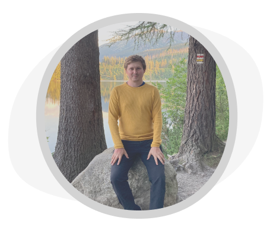

<!-- section team -->
<section id="team" class="team">
	<div class="container-fluid max-element pr-md-5 pl-md-5">
		<div class="row">
			<div class="col-lg-6 team1">
				<span
					></span
				><span class="fw-450">Vývojáři v cloudu</span> - naši vývojáři
				jsou dostupní dle potřeby daného projektu. Máte zaručený support
				kdykoliv v případě výpadku služby.
			</div>
			<div class="col-lg-6 team2">
				<span
					></span
				><span class="fw-450">Součást Vašeho týmu a projektu</span> -
				víme, že ne vždy je efektivní vše řešit externě na dálku, proto
				můžeme spolupracovat i s Vámi a Vaším týmem.
			</div>
			<div class="col-lg-12 team3">
				<div
					class="row mt-40 d-sm-flex-inline d-lg-flex align-items-stretch text-center justify-content-between"
				>
					<div class="col-sm-12 col-md-4 col-lg-3 step">
						<picture>
							<source
								srcset="img/ondra.webp 1x, img/ondra.webp 2x"
								type="image/webp"
							/>
							<source
								srcset="img/ondra.png 1x, img/ondra.png 2x"
								type="image/png"
							/>
							
						</picture>
						<p class="purple fw-500 mt-3">Architekt/Vývojář</p>
						<p>Ondra Mařík</p>
					</div>
					<div class="col-sm-12 col-md-4 col-lg-3 step">
						<picture>
							<source
								srcset="img/tomi.webp 1x, img/tomi.webp 2x"
								type="image/webp"
							/>
							<source
								srcset="img/tomi.png 1x, img/tomi.png 2x"
								type="image/png"
							/>
							
						</picture>
						<p class="purple fw-500 mt-3">Konzultant</p>
						<p>Tomáš Habrman</p>
					</div>
					<div class="col-sm-12 col-md-4 col-lg-3 step">
						<picture>
							<source
								srcset="img/sveta.webp 1x, img/sveta.webp 2x"
								type="image/webp"
							/>
							<source
								srcset="img/sveta.png 1x, img/sveta.png 2x"
								type="image/png"
							/>
							
						</picture>
						<p class="purple fw-500 mt-3">
							IT Analytik / UI Designér
						</p>
						<p>Sveťa Margetová</p>
					</div>
				</div>
			</div>
		</div>
	</div>
</section>
